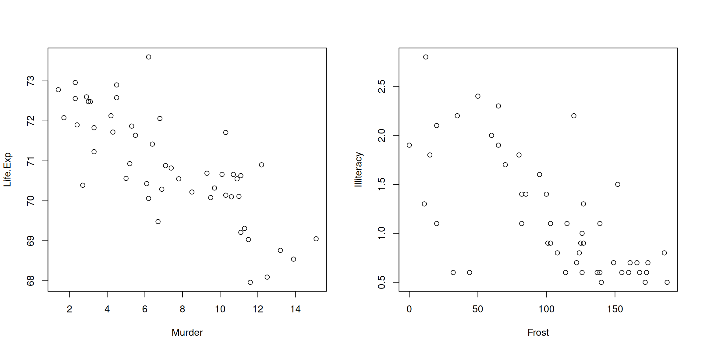
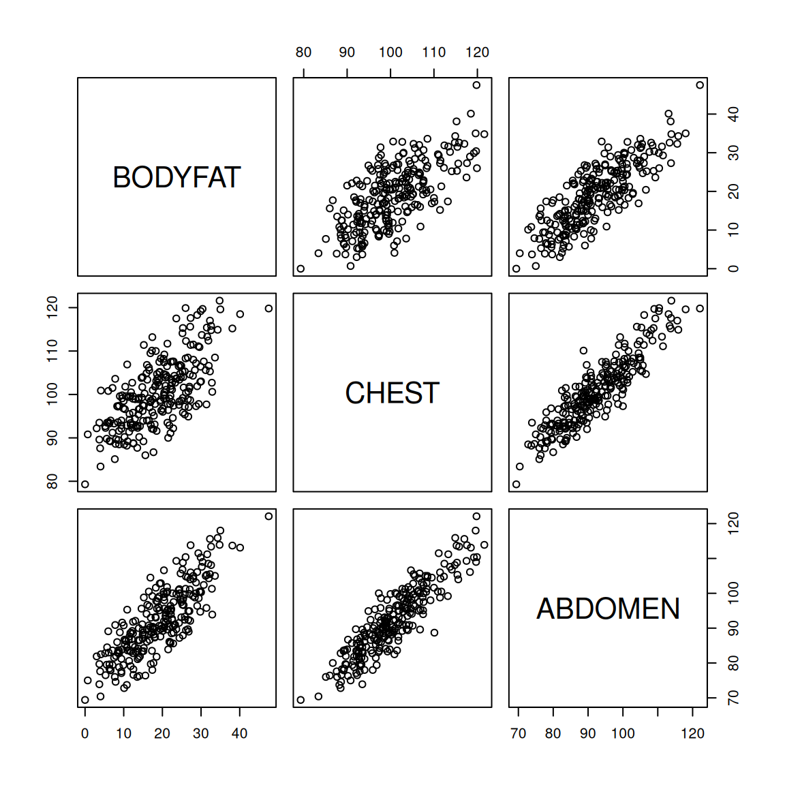
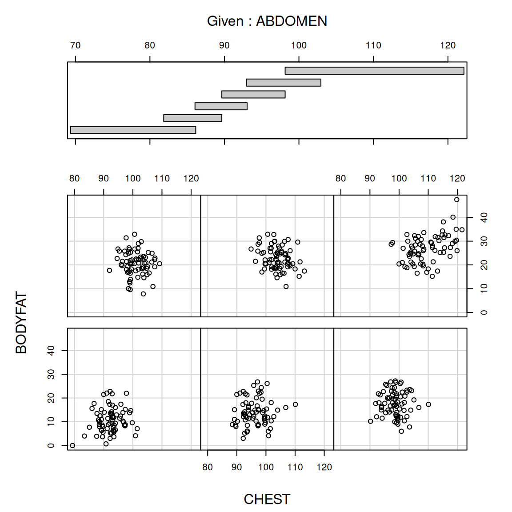
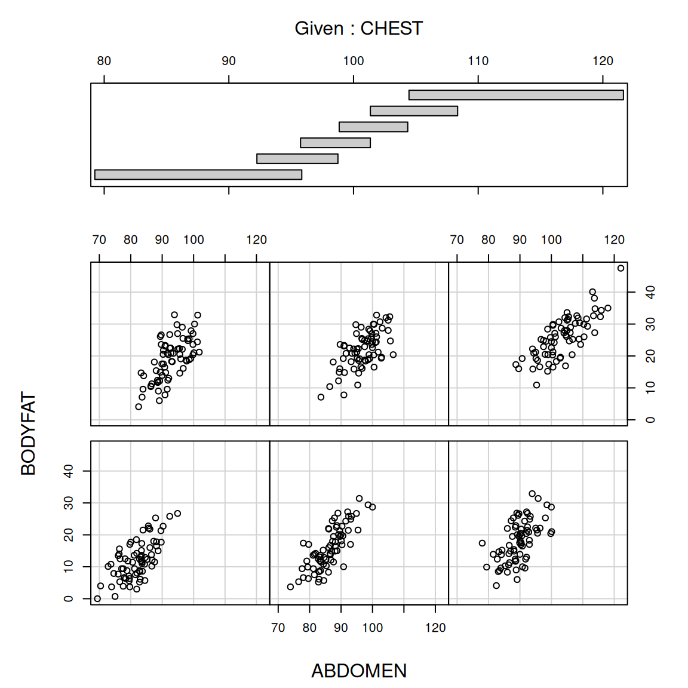

Multiple Regression and Causality
Let’s return to the Ames dataset, discussed in section. This dataset is from (De Cock 2011) and consists of 82 variables, recorded for 2,930 properties sold in Ames, IA, in 2011 (the “Ames Dataset”, frequently used for example purposes). We have so far focused on only one variable – the square footage of the house – as a predictor for the sales price of a house. However, it is logical to think that these other variables would tell us more about the distribution of our outcome \(Y\). So we want to expand our linear model to include more variables.
Uses of Regression Modeling
Before we discuss the technical details of how to expand our model, we should discuss how we can (and cannot) use the results of regression models. We can now construct tests and confidence intervals for our coefficient \(\beta_1\), with a common null hypothesis being \[H_0:\beta_1=0\] which means we don’t need to include \(X\) in our model to predict the expected value of \(Y\).
This is standard, but it is now worth discussing what can we really conclude from such inference techniques?
Users of regression models generally have goals regarding the coefficient \(\beta_1\) that fall into three categories:
Summarizing associations in the population: What is the existing relationship between the square footage in a house and its market value?
We use our sample to give us estimates that summarize the existing state of these variables in the full population, which we can’t see.
Estimating/predicting the response: A house is going on the market. Given its attributes, what will it sell for?
We want to use our sample to give us a prediction for future outcomes based on the future observation’s \(X\) value. Here the focus is on \(\hat{Y}\) and not on the estimates of the parameters – the estimates are just a means to an end.
Causal inference: By how much will the resale price of my house increase if I build an extension and add one room?
Causal inference would want to know if we change or assign an observation to have a particular value for \(X\), what outcome would that cause to occur in \(Y\). Note the distinction with the other two goals; in those other two settings, we just ask questions about how \(X\) naturally co-occurs with \(Y\) in our population.
Unfortunately, for most datasets, linear regression is only equipped to answer the first two questions. In general, you cannot determine causality by just collecting observations on existing subjects. You can only measure what is likely to naturally occur jointly in your population, often due to other causes.
Consider the following data collected on US states (the observations) on the relationship between the murder rate and the life expectancy of different states or that of Illiteracy and Frost:
We observe lower life expectancy in states with high murder rates. If you’re not careful, you might think a causal interpretation is reasonable – more murders caused a lower life expectancy – but in fact the number of murders is so low that they can’t really affect life expectancy. There are clearly other variables that we don’t measure that are probably driving these differences. This is clear with Frost, which is not rationally thought to be causally related to Illiteracy; they just happen to be seen together, due to historical reasons about the states.
It is a common mistake in regression to jump to the conclusion that one variable causes the other, but all you can really say is that when you observe one value of the variable you are highly likely to observe a particular value of the other.
Can you ever make causal conclusions? Yes, if you run an experiment, where you assign what the values of the predictors are for every observation independently from any other variable. An example is a clinical trial, where patients are randomly assigned a treatment.
It’s often not possible to run an experiment, especially in the social sciences or working with humans (you can’t assign a murder rate in a state and sit back and see what the effect is on life expectancy!). People often have observational data, i.e. they sample subjects or units from the population and then measure the variables that naturally occur on the units they happen to sample. Good observational data can be very informative and can suggest possible causal relationships. Moreover, there are statistical methods to try to improve the ability to detect causality (which are not simple regression models!) – but the gold standard for causality is experimental data.
Example 1 (Alcohol Consumption) In the 1990s until 2016, many observational studies on the effect of alcohol concluded that moderate levels of alcohol consumption could have a health benefit. They concluded this based on observational studies that compared people with different levels of alcohol consumption and what their health outcomes were. This was often called the “J” effect because plotting mortality against the amount of drinking would show a slight dip before dramatically increasing (there was and is a consensus on the negative effects of heavy alcohol usage). Popular press suggested that daily drinking, particularly red wine, could improve health outcomes (“the French Paradox”).
In 2016, an influential study1 combined these previous studies for what is called a meta-analysis – basically where many smaller published studies are put together so as to have more reliable estimates due to having more data. They combined 87 studies, for a total of almost 4 million people. They found that if you naively analyze the data, you do see the reported “J” effect, but they discovered that effect disappeared if you only used studies that required that the “abstainer group” (those who didn’t drink) were lifelong abstainers. This wasn’t true of most of the studies, where the abstainer group included people who didn’t drink alcohol because of health problems. Indeed, once they excluded such abstainers, they found a linear relationship between alcohol consumption and mortality, implying there was no “safe” level of alcohol consumption in terms of effect on health. New observational studies that followed this study continued to reinforce this conclusion.
Notice that even with almost 4 million people, they could still see the supposed “J” effect – it was not a question of poor sample size. It was a real and accurate description of the naturally occurring relationship you can expect to see if you randomly sample someone who doesn’t drink versus one who drinks in moderation. The “problem” is that randomly sampling an abstainer includes those who aren’t drinking because of poor health. And in societies where most people drink, that’s probably a large share of the abstainers! But that is not the same thing as one causing the other.
Studies of the effect of food and diet often suffer from these problems, because our diet is so intrinsically linked to other lifestyle choices or cultural heritages (which are often linked to genetic predispositions). Since the effect of diet tends to be long-term, it is also a particularly difficult area in which to do experiments.
Multiple Regression: the setup
Let’s turn to how we can add multiple variables to our linear model. The basic premise is quite straightforward. With one variable, we had a model: \[Y_i = \beta_0+\beta_1 x_i +\epsilon_i\] Now let’s assume we have measurements on multiple variables, \(x_1,\ldots,x_p\). We can expand our model to be \[Y_i = \beta_0+\beta_1 x_{i1} +\ldots+\beta_p x_{ip}+\epsilon_i\] We can similarly find the MLE by making the assumption that \(\epsilon_i\) are i.i.d. \(N(0,\sigma^2)\) – which is still equivalent to minimizing the average squared error loss, \[\frac{1}{n}\sum_i l(Y_i, \hat{Y}_i)=\frac{1}{n}\sum_i (Y_i - \hat{Y}_i)^{2}\] (We can also still consider alternative loss functions.) Note that we have to assume that \(p<n\); otherwise there is not a unique minimizer and the problem is considered ill-defined.2
Example 2 Let’s return to the Ames housing data from our simple regression example, where we predicted the log of the sales price from the log of the square footage. Now we add other variables that we would intuitively expect to explain the price of a house: the size of the lot, when the house was built and last remodeled, the size of the basement, the number of full bathrooms and bedrooms, the size of the garage (in number of cars), the number of fireplaces, and whether it has central air conditioning (a binary variable).
ames.fit.multi <- lm(log(Sale_Price) ~ log(Gr_Liv_Area) + log(Lot_Area) +
Year_Built + Year_Remod_Add + Total_Bsmt_SF + Full_Bath + Bedroom_AbvGr +
Garage_Cars + Fireplaces + Central_Air, data = ames)
summary(ames.fit.multi)
Call:
lm(formula = log(Sale_Price) ~ log(Gr_Liv_Area) + log(Lot_Area) +
Year_Built + Year_Remod_Add + Total_Bsmt_SF + Full_Bath +
Bedroom_AbvGr + Garage_Cars + Fireplaces + Central_Air, data = ames)
Residuals:
Min 1Q Median 3Q Max
-2.08049 -0.07929 0.00586 0.09697 0.55982
Coefficients:
Estimate Std. Error t value Pr(>|t|)
(Intercept) -4.859e+00 4.150e-01 -11.709 < 2e-16 ***
log(Gr_Liv_Area) 5.258e-01 1.768e-02 29.745 < 2e-16 ***
log(Lot_Area) 7.582e-02 7.102e-03 10.676 < 2e-16 ***
Year_Built 2.711e-03 1.584e-04 17.114 < 2e-16 ***
Year_Remod_Add 3.370e-03 2.040e-04 16.524 < 2e-16 ***
Total_Bsmt_SF 1.612e-04 8.965e-06 17.979 < 2e-16 ***
Full_Bath -9.581e-03 8.591e-03 -1.115 0.265
Bedroom_AbvGr -3.881e-02 5.033e-03 -7.711 1.7e-14 ***
Garage_Cars 7.189e-02 5.734e-03 12.536 < 2e-16 ***
Fireplaces 6.553e-02 5.836e-03 11.229 < 2e-16 ***
Central_AirY 1.402e-01 1.401e-02 10.008 < 2e-16 ***
---
Signif. codes: 0 '***' 0.001 '**' 0.01 '*' 0.05 '.' 0.1 ' ' 1
Residual standard error: 0.1715 on 2919 degrees of freedom
Multiple R-squared: 0.8236, Adjusted R-squared: 0.823
F-statistic: 1363 on 10 and 2919 DF, p-value: < 2.2e-16Adding these variables improves the fit to the data compared to a single predictor (decrease in our average loss)3.
We also see some of the coefficients may be surprising: the coefficient for the number of bedrooms is negative, and the coefficient for the number of full bathrooms is not significantly different from zero, even though houses with more bedrooms and bathrooms tend to sell for more.
Interpretation of the variables
In what follows, we are going to shift from considering properties of our estimates of the parameters \(\beta_0,\ldots,\beta_p\), and instead consider regression (and logistic regression) from a prediction framework: how good a prediction do we get from our linear model?
But before we switch to this perspective, here are a few words about the estimators we get and cautions about how to interpret them (see Agresti and Kateri (2021) Chapter 6.2 for more). The short story is that it is very complicated to put interpretation on the values of \(\hat\beta_j\).
There are multiple possible goals when we have many variables in understanding the relationship of \(X_j\) to \(Y\) that are important to distinguish – and which corresponds to \(\beta_j\)!
- The explanatory variable is a good predictor of the expected value of \(Y\), the response.
- The explanatory variable is necessary for good prediction of the expected value of \(Y\) (among the set of variables we are considering).
- Changes in the explanatory variable cause the response to change (causality). We’ve already discussed why this is not a reasonable goal for regression coefficients.
But what is the difference in being a good predictor versus being a necessary predictor? We can visualize the difference with plots. Being a good predictor is like looking at pairwise scatter plots – does \(X_j\) on its own provide information about what \(Y\) is likely to be? This is what we do when we do a simple regression of \(Y\) on \(X_j\) (or equivalently measure the correlation of \(Y\) with \(X_j\)).
Consider another dataset on trying to predict the body fat of a person based on external measurements – clearly both measurements of chest and abdomen are highly predictive.

However, if I do a multiple regression, including all of the possible 8 variables, CHEST isn’t significant, meaning \(\beta_j\) could be 0 and we could drop CHEST entirely:
Call:
lm(formula = BODYFAT ~ ., data = body)
Residuals:
Min 1Q Median 3Q Max
-10.621 -3.007 -0.145 3.174 10.062
Coefficients:
Estimate Std. Error t value Pr(>|t|)
(Intercept) -27.51578 19.73644 -1.394 0.165
AGE 0.01693 0.02894 0.585 0.559
WEIGHT -0.09018 0.05612 -1.607 0.109
HEIGHT -0.26712 0.18766 -1.423 0.156
CHEST -0.09148 0.11028 -0.830 0.408
ABDOMEN 0.93735 0.08818 10.630 <2e-16 ***
HIP -0.07438 0.14704 -0.506 0.613
THIGH 0.18178 0.14067 1.292 0.198
---
Signif. codes: 0 '***' 0.001 '**' 0.01 '*' 0.05 '.' 0.1 ' ' 1
Residual standard error: 4.365 on 241 degrees of freedom
Multiple R-squared: 0.7281, Adjusted R-squared: 0.7202
F-statistic: 92.2 on 7 and 241 DF, p-value: < 2.2e-16Indeed, the only variables indicated as needed are ABDOMEN and WEIGHT.
The reason for this is that if we know the abdominal circumference, the chest circumference does not tell us much more about our response \(Y\). A coplot visualizes this relationship by plotting the relationship between two variables, conditional on the value of another. In other words, it plots the scatter plot of \(Y\) against CHEST, but only for those observations that have ABDOMEN in a certain range (with the ranges indicated at the top).

This is basically what \(\hat\beta_{CHEST}\) is measuring: for a fixed value of ABDOMEN, how does \(Y\) change? And we see not really much. There is no longer a strong relationship between percentage body fat and chest circumference when constrained to observations with specific values of abdomen circumference.
The same is not true, however, for the reverse:

For a fixed value of CHEST, we see that ABDOMEN still gives a lot of information about how \(Y\) changes. So \(\hat\beta_{ABDOMEN}\) is large and significant.4
However, if I didn’t include ABDOMEN in my model, then CHEST becomes less redundant and has a significant value:
Call:
lm(formula = BODYFAT ~ . - ABDOMEN, data = body)
Residuals:
Min 1Q Median 3Q Max
-11.7912 -3.7444 -0.0768 3.9227 13.0042
Coefficients:
Estimate Std. Error t value Pr(>|t|)
(Intercept) -8.83916 23.77582 -0.372 0.7104
AGE 0.14658 0.03174 4.618 6.28e-06 ***
WEIGHT 0.05780 0.06575 0.879 0.3803
HEIGHT -0.91707 0.21458 -4.274 2.77e-05 ***
CHEST 0.24423 0.12779 1.911 0.0572 .
HIP 0.40996 0.16908 2.425 0.0161 *
THIGH 0.17006 0.17013 1.000 0.3185
---
Signif. codes: 0 '***' 0.001 '**' 0.01 '*' 0.05 '.' 0.1 ' ' 1
Residual standard error: 5.279 on 242 degrees of freedom
Multiple R-squared: 0.6006, Adjusted R-squared: 0.5907
F-statistic: 60.66 on 6 and 242 DF, p-value: < 2.2e-16Correct Interpretation of \(\hat\beta_j\)
Regression coefficients are just a measure of their relative predictive value, and only have interpretation in context with what other variables are present in the model. \(\hat\beta_j\) is only a measure of how much value is added by including \(x_j\) in your model in the presence of the specific other variables also in the model. It is the average increase in \(Y\) for a unit increase in \(x_j\), provided all other explanatory variables \(x_k\) are kept constant. It measures the relationship between \(Y\) and \(X_j\), but only in a very specific way relative to the other variables in the regression.
As we’ve seen in the Ames housing data, this can mean that even though the pairwise relationship between two variables should indicate positive correlation (as \(X_j\) goes up, so does \(Y\)), when we include \(X_j\) with other variables, we can have a negative \(\hat\beta_j\) and individually predictive variables may not have \(\hat\beta_j\) values significantly different from zero.
Relationship to our population distribution
This phenomenon is due to the correlation between our predictor variables, often referred to as multicollinearity. It is highly related to our previous discussion: unless we have an intervention or experiment, then our data is only a summary or description of what occurs in the population.
This comes out in our explanatory variables in the body fat data. We didn’t assign people to have certain sizes – we observed what was in the population naturally. And naturally, our explanatory variables are very correlated. We do not need to know CHEST in our regression, because in our population, when we see someone with a small CHEST value they also have a small ABDOMEN value. There’s no point in having both measurements from this population to predict what the average value of our response will be.
Now, if there were a population of people where small CHEST sizes frequently resulted in both large and small values of ABDOMEN, then CHEST might be more meaningful and give independent information that allows us to predict \(Y\). But that is not what happens for this population. \(\hat\beta_j\) is ultimately a summary of what can provide the best prediction of the expected value of \(Y\) in the population from which the sample was drawn.
NoteControlling for variables
In the absence of an experiment, since it is known that other variables might be the actual causal mechanism, it is common to collect a lot of other variables that might also causally explain the response \(Y\). It is often called “controlling” for the effect of the other variables. You will see sentences like “controlling for sex and age, \(X\) had a significant effect on \(Y\).” However, the correct interpretation of \(\beta_j\) for our primary variable of interest is still “how necessary is \(X_j\) (in addition to these other variables)?”.
Controlling for the effect of other variables is relevant and often good practice to get a good prediction. It can allow you to meaningfully explore your data and understand what variables are naturally seen together and understand the pitfalls that co-occurrence can cause (like in the alcohol studies). However, it is often done with the idea that this allows you to interpret causality in a regression model from our \(\hat\beta_j\). This is simply not the case. Even if you could include all possible causal variables in your model, regression coefficients will not necessarily tell you if a variable is causal.
Different kinds of causal relationships between the variables can create many different kinds of observed dependency without the dependency indicating causality. The most obvious is maybe \(Y\) caused \(X_j\) and not the other way around, like the alcohol example! You would still see high correlation, but \(X_j\) didn’t cause \(Y\). Similarly, adding other variables does not always make a non-causal \(X_j\) have a lower \(\hat\beta_j\) and thus make \(\hat\beta_j\) align with its true lack of causality; it can actually cause \(\hat\beta_j\) to increase, making it look more causal.
References
Agresti, Alan, and Maria Kateri. 2021. Foundations of Statistics for Data Scientists. Chapman; Hall/CRC.
De Cock, D. 2011. “Ames, Iowa: Alternative to the Boston Housing Data as an End of Semester Regression Project.” Journal of Statistics Education 19 (3).
Footnotes
Stockwell T, Zhao J, Panwar S, Roemer A, Naimi T, Chikritzhs T. (2016) “Do ‘Moderate’ Drinkers Have Reduced Mortality Risk? A Systematic Review and Meta-Analysis of Alcohol Consumption and All-Cause Mortality.” J Stud Alcohol Drugs. 77(2):185-98. As this article points out, previous studies had suggested the problems with who made up the “abstainer” group. This article was influential because of the breadth of the data that was combined together, but the change in attitudes was not due a single study↩︎
There are regularization strategies for how to fit this linear model with \(p>n\), such as lasso or ridge regression, which also have nice properties when \(p\) is simply large relative to \(n\), even if strictly smaller.↩︎
\(R^2\) increases from 0.523 (square footage alone) to 0.824↩︎
In fact, if our regression model were only
CHESTandABDOMEN, the coefficient forCHEST, while smaller, would still be quite significant.CHESTis not significant because the information in all the other variables makesCHESTredundant, not just that ofABDOMEN.↩︎